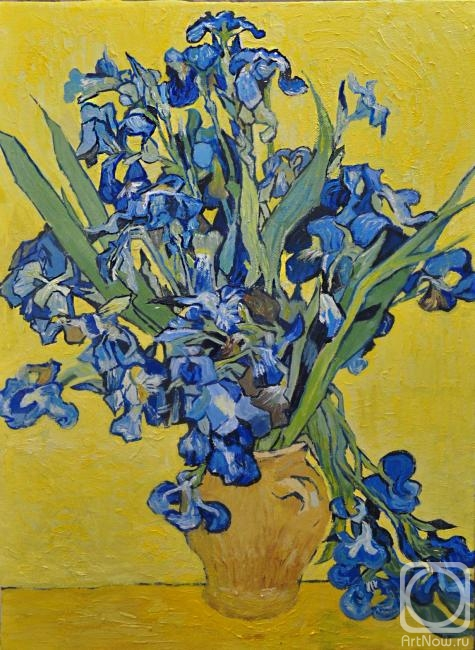

«Натюрморт ваза с ирисами на желтом фоне»
Картины Винсента Ван Гога невозможно спутать с другими. Его работы
производят сильное и незабываемое впечатление. Далекие от академической
классической живописи и, что очевидно, от произведений в стиле
импрессионизма, картины художника полны жизненной силы, агрессивных ярких
цветов. Большую часть своих полотен и культовых шедевров он создал в
период 1889-1890 годов. В то время Ван Гог находился на лечении в больнице
для душевнобольных около городка Сен-Реми-де-Прованс. Может звучать
странно, но большинство специалистов отмечают его как расцвет творчества
творца. В апреле 1890 года художник пишет несколько вариаций натюрморта с
ирисами. Среди многочисленных полотен выделяется полотно «Натюрморт ваза с
ирисами на желтом фоне», восхищающее яркостью и выразительностью красок.
Пышный букет размещен на ярком желтом фоне, создавая необходимый контраст.
Это сочетание противоположных оттенков позволяет передать колоритность
лепестков. Кроме того, с помощью данного приема усиливается насыщенность
красочной тональности картины. Композиция выстроена таким образом, чтобы
подчеркнуть контрастное созвучие красок. Художник не сосредоточен на
деталях, очевидно отсутствие теневого моделирования. Манеру исполнения
можно сравнить с японским искусством. Кисть неотрывно движется, вылепливая
и формируя нежнейшие лепестки. Цветовая палитра играет множеством
оттенков, не ставя синюю гамму в приоритет. Ван Гог отдает предпочтение
черному контуру в подчеркивании ярко-синих ирисов. Белесые штрихи
прорисовывают глубину и рельефность витиеватых соцветий. Прослеживается
техника импасто – наложения сочного слоя краски. И, опять же, это, как и
глубокая контрастность, не утяжеляют изображение. Картина пропитана
нежностью и лирикой. Аккуратно и с любовью выписанные мягкими
волнообразными движениями лепестки дышат «жизнью», хоть их кончики уже
затронуты увяданием.

на главную